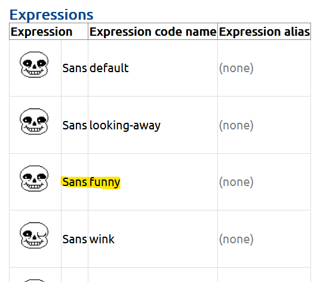

Made by FlaringK
Undertale Textbox Generator made by Demirramon
Welcome to the Text 2 Textbox Tutorial! This is an AutoHotKey script that converts text into undertale textboxes using Demirramon's textbox API. With this script and a bit of practice you'll be able to talk in places like discord with these textboxes as fast as you would normally.
If you think this is cool, go support Demirramon, their site is doing all the heavy lifting and without that this would be impossible.
This script doesn't create an image file! It simply generates a url that links to an image file. On apps like discord this url will be converted into an image. However, other places will simply leave it as a link, so this won't work everywhere.
You'll need to be using windows for this to work, then you'll need AutoHotKey and the script itself
First you'll need to run the script, you can do that by double clicking on the script once you've moved it to a suitable file location. A little AutoHotKey logo will appear on the taskbar, which is where you can stop the script.
Once you have the script running it's super simple to use it:
And that's it! Once you've chosen your expression the message will convert into a url and be sent! On apps like discord, the url will automatically be converted into an image, though this won't happen everywhere.
The template script will generate textboxes with Flowey, however you probably don't want to talk as him. In that case you'll need to learn about:
To open up the script, right click the file and then click “Edit Script”. Once you're done editing, save the script and close it, then double click on the file again to rerun the script. If an instance of the script is already running AutoHotKey will ask you if you want to replace the older instance of the script, click yes.
I wouldn't touch these options but they're there if you need them.
You can change the file format of the generated image by changing the boxurl variable from
"https://www.demirramon.com/gen/undertale_text_box.png?text="
To
"https://www.demirramon.com/gen/undertale_text_box.gif?text="
If your computer is very laggy, the script might skip over some functions. If this happens you can increase SetKeyDelay from 100. This will make the script take longer but will ensure that it won't skip inputs.
This is how you'll be able to talk as characters other than Flowey! This can be done by replacing these strings with ones of your own! As you can probably tell, each case corresponds to the number you hit after selecting all the text. By changing the variables on said case, the expression generated by that number will change.
There are two ways to go about this:
As you can probably see each line has a character and an expression, these correspond to icons that are supported by the generator. A list of the supported characters and expressions can be found here You'll need the character code name, and the expression code name.
For example, let's say we want this expression:
We would replace one of the cases with:
"&character=sans&expression=funny"
The other option, and the one you probably need if you want to edit more than just the character. First step is to go to Demirramon's generator and create the textbox format you'd like. Once you've done that, right click the generated image and click “Copy Image Link”
For example, here's my cool OC cyan sans:

And here's the link I copied by pressing “Copy Image Link”:
https://www.demirramon.com/gen/undertale_text_box.png?text=its%20my%20oc%2C%20cyan%20sans&box=underfell&boxcolor=ff8000&character=undertale-sans&expression=wink&charcolor=00ffff&font=sans&asterisk=009900&mode=regular
You'll notice that the string we need is right in the link itself! An easy way to figure the part of the link you'll need is that it's everything that comes after the first &, including the & itself. You should be able to put that in and it'll work like a charm.
Of course you aren't limited to just 10 different expressions, the script can take any single character you can type in. For example if you wanted to place an expression on the “a” key, you can copy and paste one of the cases below, like so:
Case "a": return "&character=Flowey&expression=hurt"
And here are some other examples:
Case "A": return "&character=Flowey&expression=shocked"
Case "+": return "&character=Flowey&expression=sweat"
Case "?": return "&character=Flowey&expression=frisk"
If you're having any trouble, I'm FlaringK#4275 on discord, message me there or on whatever account I posted this on, I'll be happy to help.
Again, go support Demirramon, without their extremely cool site none of this would be possible.